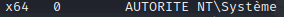

Execute process
> ps
=> List processes : PID, PPID, ...

=> We are in Arch x64, User NT\Système
: we need to pick a process with Arch x64, User NT\Système !

Example :
> migrate 1100

Warning : Dangerous, can lose meterpreter session !
> sysinfo

=> Updated meterpreter to x64 Arch